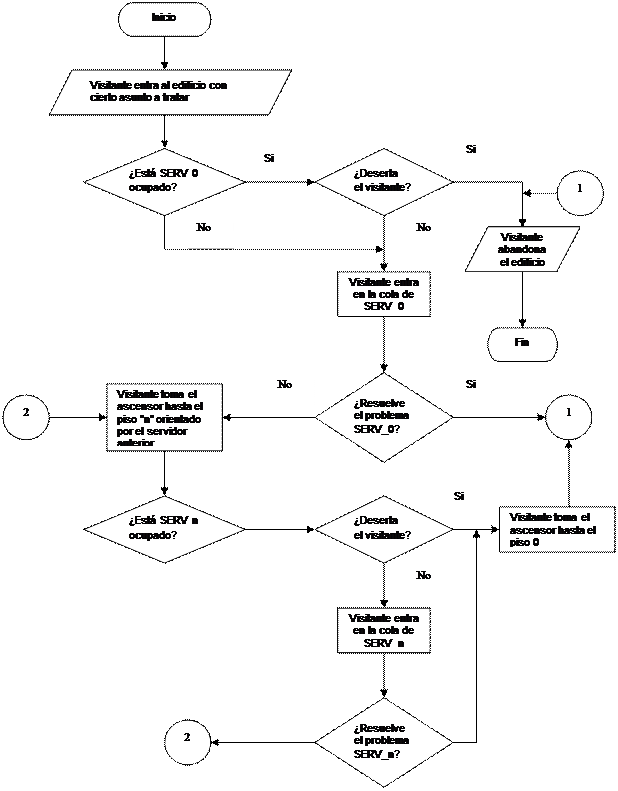

En la conferencia anterior se estudiaron conceptos básicos relacionados con la simulación en general, y en particular se precisó la definición de la simulación de procesos discretos estocásticos que será el objeto de estudio del presente curso; pero este estudio al nivel del 4to año de Ciencias de la Computación, persigue habilidades prácticas para el futuro profesional, además de conocimientos teóricos y prácticos para desarrollar una simulación.
P.C. Suponga que resultan claros los conocimientos teóricos y prácticos básicos para desarrollar una simulación de un sistema o modelo presumiblemente discreto y estocástico. ¿Cuál de los tópicos tratados en la primera conferencia puede ser el más importante prácticamente para decidir el emprender o no una tarea de simulación?
R/ El conocimiento de las ventajas y desventajas de una simulación, porque ello ayuda a argumentarla ante los jefes.
En esta conferencia se tratarán otros temas relacionados con la planeación de una simulación y las formas en que puede lograrse el apoyo de los jefes. El objetivo de la conferencia es ilustrar el procedimiento general o esquemático de desarrollar una simulación (suponemos siempre la simulación de un proceso discreto y estocástico). El resto del curso se ocupará de los detalles técnicos.
El procedimiento general esbozado aquí para el desarrollo de una simulación es largo, complejo y caro de implementar. Pudiera pensarse que se pueden hacer simplificaciones sustanciales cuando el sistema es relativamente sencillo o ha sido bastante estudiado. Esto es cierto en principio y se aboga por la simplificación de esta metodología en todos los casos en que sea posible.
Sin embargo, ocurre con frecuencia que el desarrollo mismo de la simulación permite descubrir que sistemas hipotéticamente sencillos no lo son tanto. Por otra parte sistemas muy estudiados no son necesariamente "muy comprendidos". Desde este punto de vista vale la pena en general, seguir el procedimiento general descrito aquí aunque parezca costoso en tiempo y recursos.
El desarrollo de una simulación (más bien del proceso modelación-simulación) conlleva un conjunto de pasos, que pueden formularse de una u otra manera por diferentes autores, pero concordantes en general con los siguientes:
Paso 1. Análisis preliminar para determinar si vale la pena la simulación
Paso 2. Formulación del problema
Paso 3. Recolección y análisis de la información pertinente
Paso 4. Construcción del modelo
Paso 5. Programación para la computadora
Paso 6. Validación
Algunos autores identifican los dos primeros pasos en uno solo como "análisis de prerequisitos". Otros subdividen el paso de construcción del modelo en modelos primarios y refinamientos sucesivos. En cualquier caso, todos sostienen que lo que aquí referiremos como los dos primeros pasos, es imprescindible antes de cualquier otra cosa. Los pasos 3 al 6 pueden superponerse en alguna medida en el tiempo o formar lazos, de acuerdo a las circunstancias; pero incluso esta superposición parcial en el tiempo debe estar controlada para obtener un resultado unificado y comentaremos algunas reglas para ello.
El objetivo del análisis preliminar, tal como lo separamos en el paso 1 no es siquiera llegar a caracterizar el problema. Antes que esto es llegar a decidir incluso si la simulación vale la pena o no. Maisel comenta que en la mayoría de los casos un estudio de simulación se inicia por una sugerencia ingenua, bien por parte de un especialista como un cibernético, deseoso de hacer algo especial desde el punto de vista profesional, o bien por parte de un directivo que ha oído hablar de la simulación en computadoras y comenta la posibilidad de usar esta técnica con algún otro directivo de más bajo nivel o un especialista. Lo cierto es que el especialista aprovecha este interés inicial del jefe, solicita autorización para iniciar el desarrollo de una simulación, probablemente lo justifica primariamente con la solución de un problema particular y el jefe lo autoriza esperanzado en que aquella técnica moderna e impresionante pudiera ser de interés para su empresa. Al cabo de 5 años la dirección aprende que aquella sugerencia inocente le ha salido quizás muy cara...
Se pueden evitar estudios infructuosos y caros cuando el especialista comienza con un análisis preliminar cuidadoso, que es lo que denominamos primer paso. Visto desde el punto de vista de la teoría general esbozada en la primera conferencia, el objetivo del análisis preliminar es conocer el sistema real, proyectar lo que la simulación podría lograr y realizar un análisis de costos-beneficios para determinar hasta que punto vale la pena desarrollar todo el proceso de modelación y simulación.
Lo primero que él debe hacer es revisar alguna información, entrevistarse con otros empleados y dirigentes intermedios relacionados con el sistema que debe simular y observar este sistema en operación. El objetivo es obtener lo más rigurosamente posible respuesta a dos preguntas:
1. ¿Qué hace realmente el sistema?
2. ¿Cuánto realmente se conoce sobre él?
Desde el punto de vista de la conferencia 1 se trata por tanto de comprender el SISTEMA REAL. A partir de allí, el especialista que hace o dirige el análisis preliminar debe hacer un estimado, lo más certero posible de los recursos necesarios para la simulación y una descripción con el mayor detalle también posible de qué la simulación puede resolver o de cómo podría ser usada. En esencia, esto último representa el análisis de costo/beneficio y es quién debe conducir a la conclusión de si vale la pena continuar o no. Si es positivo, se emprenderá la formulación del problema. De lo contrario, la simulación debe descartarse desde aquí.
La estimación preliminar de los costos y beneficios y de la relación costo/beneficio debe hacerse conforme a los dictámenes generales de la ingeniería de software, porque en última instancia la simulación en un software precedido de un análisis, quizás un tanto más profundo en el que participan especialistas de Investigación de Operaciones y de Estadística, además de los analistas de sistema
Al estimar costo deben incluirse por tanto los costos por equipos y componentes especiales para la simulación (por ejemplo sensores), el costo de la modelación (entendida como análisis) y el costo de la simulación (entendida como programación). Para esta estimación inicial, de costos se sugiere el clásico método de descomposición: a partir de estimaciones iniciales de esfuerzo, medido en Personas-Año (PA) o Personas-Meses (PM) estimar los costos de las diferentes fases de modelación y simulación teniendo en cuenta la calificación de especialistas y las actividades y multiplicar por una tarifa propia de cada actividad. Ver al final detalles sobre la estructura de especialidades en el grupo o team de simulación. A los fines del análisis prospectivo de costo/beneficio, debe calcularse también los costos de mantenimiento o actualización de la simulación en los primeros años o meses. Si resultara esto difícil, pueden aplicarse normas internacionales en términos de porcentajes del costo inicial.
De forma análoga es deseable estimar con la mayor certeza posible, los beneficios tangibles de la simulación si los hubiera. Entonces, es posible utilizar diferentes técnicas de análisis de costo/beneficio para argumentar preliminarmente la simulación. Entre las técnicas de costo/beneficio más populares se encuentran:
a) Punto de equilibrio, calculado como el momento en que el sistema "precedente" y el sistema "propuesto" equilibran sus costos. Se supone que el sistema propuesto por la simulación tiene costos iniciales muy altos pero tiende a reducirlos, mientras que el sistema "actual" o más bien "tradicional" tiene costos que son crecientes. El punto de intersección, determinado numérica o gráficamente es el denominado "punto de equilibrio". Esta metodología es raramente utilizada en simulación porque focaliza la comparación del sistema "propuesto" con el sistema "anterior", desde el punto de vista de los costos, y no siempre existe o son definibles claramente, los costos del sistema "anterior". En esta metodología se supone que no hay cambios esenciales en los beneficios, o al menos, que ellos cambian con menos intensidad que los costos. Con todo, el análisis de costo/beneficio de una simulación, mediante esta técnica de punto de equilibrio puede ser útil (sobre todo si se calcula en función de unidades vendidas y no de tiempo) cuando una empresa está creciendo y el costo asociado al "volumen de producción" resulta de gran relevancia en el costo global de la operación.
b) Recuperación o retorno de la inversión, calculado como el momento en que el sistema "propuesto" (en este caso los resultados de la simulación) acumula beneficios superiores a los "costos acumulados". Esto puede ser una buena metodología en el caso de que la simulación proporcione beneficios tangibles crecientes en el tiempo y capaces de argumentar convincentemente su alto costo.
c) Análisis de flujo de efectivos, calculado en cada momento prospectivo como la diferencia entre los ingresos y los costos, en forma absoluta y acumulada a lo largo del tiempo. El análisis de flujo de efectivos examina la dirección, la magnitud y el patrón de flujo del efectivo que se asocia con el conjunto de programas de la simulación propuesta. Si como consecuencia de la simulación se propusiera un reemplazo de un viejo sistema por uno nuevo y éste no generara efectivos adicionales para la empresa, únicamente habrá gastos de efectivo asociados a la simulación. En este caso la simulación no podrá justificarse con base en las nuevas utilidades obtenidas y deberá examinarse con mejor precisión en base de otros beneficios tangibles, si es que se considera aun como factible. De esta forma, esta metodología ayuda a precisar los beneficios de la simulación. Esta técnica de análisis de costo/beneficio, está más acorde con la simulación porque ella supone procesos costosos, en los cuales, la ganancia real no se obtiene hasta el cabo de varios años. Es particularmente recomendable en empresas relativamente pequeñas en relación con el costo de la simulación, o en aquellas donde el negocio se vea afectado de manera importante por una sangría de fondos.
d) Análisis del valor presente. El "valor presente" de una suma de dinero en cierto instante del futuro es el monto que hay que depositar "ahora" para obtener dicha cantidad en ese instante futuro, producto de los intereses. Esta técnica de análisis de "costo/beneficio" supone comparar con los datos a largo plazo, el valor presente de los beneficios calculados con el valor presente de los costos. Se convierte así en una manera de estimar todos los recursos económicos a gastar en la modelación-simulación y generados a lo largo de la vida útil del sistema, y todos los beneficios a largo plazo, pero contabilizados y comparados en términos de su valor actual y creciente. Es particularmente recomendable esta última metodología porque las tareas de modelación-simulación tienen largos períodos de inversión, así como costos elevados.
En resumen, para el análisis preliminar de costo/beneficio de una simulación se recomienda comenzar probando esta última técnica (comparación de costos y beneficios en términos del valor presente), sobre todo en todos aquellos proyectos que sean a largo plazo y costosos. Si la empresa además es pequeña en relación con la inversión en simulación, es particularmente recomendable la técnica de análisis de flujo de efectivos. Los anexos A y B ejemplifican estas técnicas, de acuerdo con lo descrito por ejemplo, en [3].
En cualquier caso, el analista deberá informar al jefe del más alto nivel los resultados de todo el análisis preliminar, bien para obtener el respaldo de los recursos y solicitar ayuda en la formulación del problema, o bien para explicarle por qué la simulación no parece factible.
Una vez concluido el análisis preliminar con resultados positivos se pasa a la etapa de formulación del problema. En esta, la esencia es detectar la especificación de la aplicación que será lograda en la simulación. Visto desde el punto de vista de la Conferencia 1, se trata de especificar el MARCO EXPERIMENTAL. Para esta tarea se trata de usar directivos a todos los niveles. Una técnica productiva es interrogarlos sobre qué le pedirían al programa de simulación si estuviese disponible:
a) hoy
b) a mediano plazo (2-3años)
c) en el futuro menos mediato
En la mayoría de los casos prácticos se obtendrán problemas o preguntas vagas, insuficientemente precisas, y la tarea fundamental de los simuladores iniciales es reformular dichos problemas. No puede esperarse en general que los jefes formulen preguntas propias a un sistema de simulación muy exactas, y mucho menos que ayuden a los simuladores a reformularlos en términos precisos. En estos casos, vale auxiliarse de los asesores del jefe; pero es necesario jugar un papel activo. Finalmente, no puede olvidarse consultar con el jefe los problemas "reformulados". Esto debe hacerse incluso por escrito hasta obtener su consentimiento. De lo contrario, puede emprenderse una simulación con objetivos que no son concordantes con los intereses de la institución.
Los problemas que desea plantear el jefe a la simulación y que resultan más difíciles de precisar son aquellos que formula en términos vagos de una "optimización". En estos casos, la estrategia no es discutir con el jefe el concepto de que una simulación no conduce necesariamente a una "optimización", más bien, es precisar cual es su sentido intuitivo de optimización, o más exactamente cuál es su "función objetivo" o el "criterio de efectividad". Las medidas de eficiencia o efectividad que espera, pueden estar mas o menos claras en dependencia del sistema concreto objeto de estudio. Por ejemplo: si se trata del problema de demanda de los servicios de ascensores de un edificio, después de varias entrevistas, puede quedar claro que lo que se pretende "minimizar" es el tiempo de demora en el flujo "entre pisos" de los clientes a través de los elevadores, o más bien, que la eficiencia del "sistema" puede medirse en términos de la "reducción del tiempo de espera" ante los ascensores y del "número de personas que los elevadores transportan por unidad de tiempo". En otros problemas, arribar a criterios de eficiencia, que orienten el objetivo de la simulación como experimentación puede ser más difícil. Ver en [1] un ejemplo relacionado con la simulación de un combate de infantería en tierra.
La formulación del problema conduce naturalmente a la definición inicial de las variables a considerar y desde este punto de vista, comienza en sí la modelación. Por otra parte, la recolección y análisis de los datos inciden en la refinación de los modelos. Por ello las etapas siguientes del proceso pueden superponerse en tiempo.
Los primeros modelos se inician cuando se comienzan a definir las variables a considerar y sus interacciones. Se trata aquí de variables "en un sentido general". Dichas "variables" orientan, pero no tienen que ser exactamente las variables que intervienen en el "análisis de los datos", las que intervienen en la "perfilación del modelo matemático" y en última instancia las que aparecen "en la programación de la simulación".
Desde el punto de vista de la Conferencia 1, inicia la fase de MODELACION. En realidad no se parte necesariamente de un MODELO BASE que se ajuste a cualquier MARCO EXPERIMENTAL; pero frecuentemente se parte de un MODELO BASTANTE GENERAL, en el cual no hay demasiadas restricciones ni simplificaciones y según la formulación del problema y al análisis de los datos, se emprende un proceso de refinamiento sucesivo de este modelo.
Las variables generales que intervienen en el sistema deben ser catalogadas en principio como endógenas o exógenas. Son variables endógenas, aquellas relacionadas con la naturaleza interna del sistema objeto de simulación. Por ejemplo, en el problema de los ascensores, el estado de la recepcionista o servidor de cualquier piso (en las categorías de 0: No disponible, 1: Disponible pero ocupado, 2: Disponible y desocupado) es una variable endógena pues su valor depende del sistema internamente. En cambio, la variable que pudiera representar el interés de un cliente de la oficina (por ejemplo tipo de reclamación) pudiera considerarse exógena pues depende más de la interacción entre el sistema y el entorno. También son exógenas variables tales como el nivel económico social de la población que dicha oficina atiende, porque puede influir en los servicios de la oficina y sin embargo es en principio, externa a ella.
En simulación resulta a veces cómodo distinguir aquellas variables que representan una entidad o componente del sistema. Por ejemplo, podría hablarse de una variable "SERV_n" (donde n es un número concreto) que representa el Servidor del piso "n" en el problema de la simulación del servicio de ascensores. Tal variable es una entidad porque representa una componente del sistema. También son entidades cada ascensor, cada cliente, cada reclamación, etc. Las variables entidades tienen atributos los cuales en última instancia, son variables que van a formar parte del modelo y probablemente de la programación. Así por ejemplo "SERV_n" puede tener como atributos "SSERV_n" y "CSERV_n" que representan respectivamente, el status de "SERV_n" y el número de personas en la cola de "SERV_n" (probablemente a los fines de la simulación en lugar del número de personas haya que simular una lista de las personas en la cola) También se habla de actividades, para hacer referencia a aquellas variables que de alguna forma describen el proceso que se va a simular. Las actividades se reflejan muchas veces como atributos de entidades, por ejemplo, la variable "SSERV_n" puede considerarse una actividad.
Al margen de este tipo de clasificaciones, que no es única, ni exhaustiva, lo esencial es que en esta fase del proceso debe disponerse de una idea preliminar del sistema, un conjunto adecuado de problemas y una descripción inicial de las variables a considerar. Los primero modelos para el caso de un proceso estocástico discreto se logran cuando se precisa en alguna medida:
- la lista de componentes, o variables a considerar
- las interacciones entre ellas
La lista de componentes o variables puede precisarse, de acuerdo a la clasificación convencional anterior de la siguiente forma:
§ Para cada variable es necesario dar una definición precisa incluyendo su nivel de medición y de ser necesarias las unidades de medición.
§ Si una entidad se considera una variable, es necesario precisar sus atributos y el subsistema al que esta variable pertenece.
§ Si una variable del tipo atributo, aparece en más de una entidad, especificar en cuáles.
§ Si se habla de actividades como atributos, especificar las entidades relacionadas.
A manera de ejemplo de especificación de la lista de componentes o variables, reflejamos la siguiente, relativa al problema de simulación de la demanda de ascensores [2].
|
SERV_n_k |
Entidad |
Representa el ente imaginario que resume los empleados de atención del piso "n" en el momento "k |
Tiene como atributos SSERV_n_k y CSERV_n_k |
|
SSERV_n_k |
Atributo |
Describe el status de SERV_n como: 0: no disponible, 1: disponible pero ocupado, 2: disponible y desocupado, todo en el instante de tiempo k |
Atributo de SSERV_n_k. Puede ser considerado una actividad. |
|
CSERV_n_k |
Atributo |
Describe la longitud de la cola de personas esperando iniciar su atención en el piso "n" en el instante "k" |
Atributo de SSERV_n_k |
|
PERS_k |
Entidad |
Describe al visitante que llega en el momento k |
Se identifica con la entidad OBJREC_k |
|
OBJREC_k |
Entidad |
Describe el objeto de la visita o asunto a tratar de PERS_k |
Tiene como atributos TREC_k, SREC_k |
|
· |
|
|
|
|
· |
|
|
|
|
· |
|
|
|
|
TEASC_p_q |
Atributo |
Variable que describe el tiempo de espera del ascensor en el piso "p" en el tiempo "q" |
Atributo de ASC_p |
En los modelos primarios, la definición de las "variables" no tiene que ser tan detallada como se hace en un "diccionario de datos" en el diseño de una base de datos, porque aún estas no son variables definitivas. Lo importante realmente es precisar un poco las variables que van a ser objeto de medición y el nivel de ésta.
Las interacciones entre variables deben explicar en si el modelo para la a simulación y puede lograrse a través de diagramas de flujo, junto con explicaciones complementarias. Por ejemplo, el siguiente diagrama explica de manera muy general el flujo de un visitante o cliente por el edificio cuyo sistema de demandas de ascensores quiere ser simulado [2] y puede ir acompañado de descripciones como las siguientes:
§ Los visitantes arriban al edificio durante un día de trabajo de acuerdo con una distribución de arribos medida experimentalmente y con asuntos a tratar también aleatorios de acuerdo a distribuciones históricas.
§ El estado del servidor del piso 0 y de cualquier servidor, se determina por el horario y la cola existente
§ La deserción en cada piso, cuando haya personas en la cola se determina por probabilidades históricas condicionadas al tamaño de la cola
§ El estado de la cola de cada servidor se determina por el flujo de los visitantes anteriores (se simula realmente a través del tiempo)
§ El asunto a tratar determina por ciertas reglas, si el servidor del piso 0 resuelve el problema y en caso contrario, dichas reglas determinan el piso al cual tiene que ser redireccionado el visitante.
§ En los restantes pisos, la solución del problema o su remisión a otro piso se determina por distribuciones históricas de carácter probabilístico (que se corresponden con detalles específicos o complicaciones del asunto a tratar)
§ Los tiempos de atención de cada servidor, a cada cliente, se determinan por el asunto a tratar y distribuciones probabilísticas.
§ El proceso de toma del ascensor supone también un tiempo de espera en la cola, tiempo de entrar al ascensor, tiempo de viaje y tiempo de salida del mismo.

Nótese que en este diagrama no se detalla la espera, toma, y abandono del ascensor. Probablemente ello se logra mejor relacionando este diagrama de flujo con otro que indica el comportamiento del ascensor como entidad y que es simulado a través del tiempo y en paralelo con el flujo de los visitantes. Además hay que tener en cuenta si se habla de un edificio con uno o varios ascensores.
El proceso de recolección y análisis de los datos puede solaparse con el de la modelación y refinamiento sucesivo de los modelos. La recolección de datos se hace a partir de diversas fuentes que pueden ser: datos existentes sobre el sistema, opiniones de expertos y estudios de campo.
Entre los datos existentes debe contarse siempre con los datos o estadísticas regulares del sistema. Son muy seguros pero no siempre accesibles. Se pueden utilizar también los informes de los funcionarios a sus superiores. Están usualmente archivados y en ese sentido son más accesibles; pero pueden estar sesgados. Están también los informes finales o de balance periódicos que tienen el valor de resumir información pero la desventaja de que a veces no contienen la información con los detalles que interesa.
Las opiniones de expertos deben ser aceptadas como fuente de información siempre con reserva. Si se quiere una información detallada a partir de los expertos, es necesario preparar cuidadosamente una encuesta y aplicar técnicas de análisis de opiniones de expertos para utilizar los resultados. Los expertos pueden ser más importantes cuando se desean investigar un aspecto cualitativo del problema y en este sentido la entrevista abierta es más productiva.
Los estudios de campo pueden proporcionar datos muy fidedignos, por ejemplo sobre las distribuciones de variables de cuyo comportamiento no existan datos previos. Sin embargo por ser caros y demorados, deben utilizarse sólo en última instancia y además realizarse bien, para que arrojen la información verdadera.
Cuando se hace un estudio de campo, es necesario contemplar, operacionalmente:
§ un diseño del experimento y uso de técnicas de muestreo si es necesario
§ un diseño adecuado de las encuestas o del sistema de medición que va a utilizarse
§ el control y corrección de sesgos de observación (las personas no reaccionan igual cuando sienten que son observadas)
§ balance entre la riqueza necesaria del estudio y las restricciones que pueda poner la empresa para realizar tales estudios
Por otra parte, es necesario contemplar desde el punto de vista organizativo:
§ la selección de un personal confiable para la toma de los datos necesarios
§ el entrenamiento a los recolectores de datos
§ un cronograma riguroso del trabajo de campo
§ la realización de un estudio "piloto" cuando el estudio de campo sea grande (el objetivo del estudio piloto no es coleccionar datos en sí sino comprobar que el proceso de captación se hace de acuerdo a todas las especificaciones).
El análisis de los datos se auxiliará de paquetes estadísticos y supone previamente la introducción de esos datos en ficheros apropiados. Esto supone definir "variables" objeto de interés adecuadamente estructuradas de acuerdo al paquete de software a utilizar. Utilizaremos el SPSS para Windows cuya forma general de uso se describe por ejemplo en [4]. El objetivo del análisis de los datos puede ser caracterizar las variables en general (digamos la frecuencia de sus valores, si es discreta; o su tendencia central y variabilidad, cuando es continua). Si las variables forman parte importante de la simulación, la caracterización será más exigente. Se necesitará identificar su distribución (su ajuste a una distribución teórica o a cierta distribución empírica), comparar los valores de esta variable entre entidades, etc. Los ejercicios de las primeras Clases Prácticas persiguen estos objetivos. Como preparación puede repasarse el proceso de entrada de datos en el SPSS [4] y el uso de las técnicas de análisis descriptivo de datos en este paquete [5].
El refinamiento del modelo, no es expresión de incapacidad de formulación, es intrínseco a la teoría de la modelación como lo es el refinamiento sucesivo en el paradigma de la programación estructurada. De hecho, el análisis y procesamiento de los datos obliga usualmente a una refinación del modelo. La programación de la simulación en sí y su validación, también determinan frecuentemente necesidades de modificación del modelo. En última instancia recuerde que concebimos la simulación de un proceso estocástico discreto como la elaboración de un conjunto de programas, sólo que precedido de un análisis en que intervienen además de especialistas clásicos de análisis de sistemas, otro tipo de analistas: de investigación de operaciones, de estadística, que ayudan a precisar el modelo. Si se tiene en cuenta que además existe un conjunto de "paquetes" orientados a tareas de "simulación" se comprende fácilmente que lo más importante en sí es la modelación y la concepción de la tarea a simular.
La otra cuestión particular del uso de paquetes o de la elaboración de software destinado a la simulación que merece un comentario específico es la validación. La validez se garantiza en primer lugar durante el proceso mismo de construcción de los programas de simulación y ello se logra sólo si se mantiene siempre en mente el sentido de la aplicación. Son aplicables aquí las técnicas de prueba de un software clásicamente orientadas por la Teoría de la Programación y la Ingeniería de Software. Pero una vez terminada la versión del programa de simulación o partes del mismo, su prueba o validación puede emprenderse mediante otras vías fundamentales que responden directamente a los objetivos de la modelación-simulación en sí: la consulta de expertos y el uso de estándares.
La consulta de expertos se utiliza ejecutando los programas, obteniendo resultados y sometiéndolos al criterio de expertos o especialistas en la materia. No debe olvidarse que este tipo de consulta padece de las deficiencias de todo sistema de consulta a expertos, en particular, la posible divergencia de sus opiniones e incluso el sesgo (cuando están por ejemplo, predispuestas hacia las computadoras o el team de simulación). Pudieran evitarse estas dificultades, si fuera posible previamente investigar con los expertos qué debería responder el experto ante una situación determinada, o trabajando con sistemas de inteligencia artificial que ayuden a corregir el sesgo de los expertos.
El uso de estándares brinda un criterio de validación más efectivo, pero depende de la existencia de éstos. Como estándares, se entiende un conjunto de situaciones ocurridas realmente ante un flujo de entrada dado. Se trata en este caso de crear datos que se corresponden a la situación estándar, ejecutar la simulación y comparar estadísticamente las salidas de los programas con lo que ocurrió en la realidad.
En cualquier caso, so los resultados de la validación fueran negativos, hay que analizar si se trata de que los datos no fueron adecuadamente preparados o si es un problema de la programación o del modelo. Esto último conduciría al perfeccionamiento del modelo, lo segundo a la corrección del programa y lo primero a la nueva definición de los datos. Cuando se utiliza la consulta de expertos y también los estándares la decisión de que es lo que está mal es el resultado del análisis que debe hacer el llamado "team de control" que trabaja paralelamente e independientemente del "team de simulación" de acuerdo al siguiente epígrafe.
Por su complejidad y alcance, los trabajos de modelación-simulación raramente pueden emprenderse por especialistas trabajando individualmente. El trabajo interdisciplinario es imprescindible, e incluso, dentro de una misma especialidad (digamos Ciencias de la Computación) pueden requerirse especialistas en diferentes ramas: Bases de Datos, Programación, Inteligencia Artificial, etc.; pero lo que caracteriza el trabajo multidisciplinario en este tipo de tareas en normalmente, la necesidad de especialistas matemáticos en Investigación de Operaciones y/o Estadística, y la necesidad de especialistas de la materia objeto de simulación y directivos del sistema formando parte de un "team", "equipo" o "grupo" de simulación".
Así, el team de simulación está compuesto esencialmente de tres grupos de profesionales:
1. Directivos y especialistas de la materia
2. Matemáticos que actúan como analistas desde el punto de vista de la Investigación de Operaciones o la Estadística
3. Analistas de sistemas, programadores, o especialistas en Ciencias de la Computación en sí
En dependencia de la complejidad de la tarea, el team de simulación puede descomponerse en varios grupos, que atiendan la modelación y la programación de determinados "bloques", "subsistemas", u "objetos". En este caso, los programadores, como "codificadores" pueden estar organizados "ad-hoc", subordinados a diferentes subgrupos en cada momento bajo la dirección de analistas o de un "programador principal". La organización de la programación a su vez, puede ser automatizada optimizándola con técnicas de ruta crítica, que además actualizan los costos de la labor en una forma efectiva. Pueden utilizarse herramientas como el Microsoft Project
La dirección y control de todo este proceso, así como la validación de la simulación y la decisión en cada momento sobre el desarrollo sucesivo exigen la definición de un "team de control". En principio este "team" puede tener la misma estructura profesional que cada "team de simulación" pero es imprescindible que al menos el representante de los directivos y de los especialistas de la materia tenga autoridad administrativa. Se requiere además que el analista, especialista en IO / Estadística de este team tenga la formación más versátil posible. El "analista de este team" actúa como "programador principal" coordinando tareas y el programador de este team de control es el responsable de ejecutar las pruebas de validación a ciegas con los restantes programadores.
El nivel de conocimiento del sistema, la visión general de la simulación y los detalles de sus pasos por cada miembro del team de simulación y del team de control puede ser diferente, de acuerdo a sus funciones. A continuación, se proporciona una tabla que puede ayudar a la conformación óptima de estos equipos.
|
|
Equipo de Simulación |
Equipo de control |
Dirección más arriba |
||||
|
|
Directivos o Especia-listas de la Materia |
Especia-listas de IO o Estadística |
Analistas de Sistemas y Programa-dores |
Directivos o Especia-listas de la Materia |
Especia-listas de IO o Estadística |
Analistas de Sistemas y Programa-dores |
|
|
Conceptos |
X |
X |
X |
X |
X |
+ |
+ |
|
Visión general del proceso |
X |
X |
+ |
X |
X |
+ |
+ |
|
Modelo |
+ |
X |
+ |
+ |
X |
+ |
|
|
Análisis de Sistema |
+ |
X |
X |
+ |
+ |
X |
|
|
Programación de la simulación |
+ |
+ |
X |
+ |
+ |
X |
|
|
Prueba o validación |
X |
+ |
+ |
X |
X |
X |
|
|
|
|
|
|
|
|
|
|
|
|
X: necesario |
+: Preferible |
|
||||
Se incluye en la tabla anterior la dirección "más arriba" que se supone que es la que financia o autoriza la simulación.
A manera de resumen de las tareas a ejecutar en el procedimiento general de una simulación, se brinda la siguiente tabla. Puede resultar particularmente interesante el papel del especialista en Ciencias de la Computación entre el personal requerido representado en la parte superior de esta tabla por una flecha. En nuestro criterio personal, el especialista en Ciencias de la Computación debe estar preparado para acometer tareas particulares en cualquiera de estos niveles; pero sobre todo, está llamado a jugar un role de conexión, que estimule el trabajo interdisciplinario.
|
|
Tareas / Personal requerido |
||
|
Estado de desarrollo de la simulación |
Directivos y Especialistas de la Materia |
Especialistas de IO y Estadística |
Analistas de Sistemas y Programadores
|
|
Planificación y preparación |
Conjunto de preguntas
Establecimiento de objetivos |
Lista de variables y parámetros
Especificaciones conforme a los objetivos
Conjunto de problemas de prueba o validación |
Programación de chequeo de errores
Especificaciones para el chequeo del proceso de programación (debugging) |
|
Modelación |
Aportar datos históricos
Opiniones de Expertos |
Dirigir estudios de campo
Elaborar modelos matemáticos y definir algoritmos |
Programas para computadoras |
|
Validación y Aplicación |
Revisar el "buen sentido" de los resultados |
Diseñar corridas de validación y aplicación |
Reprogramación |
El procedimiento general de elaboración de una simulación sigue las ideas generales de la ingeniería de software; pero se distingue en particular por varias razones:
1. Se trata de un software costoso y cuya elaboración requiere inversiones a largo plazo. Las técnicas de análisis de prerequisitos condicionan las estimaciones de costo/beneficio a estas particularidades.
2. El "clásico análisis de sistema" va precedido de la elaboración de modelos que requieren la participación de múltiples especialistas, en especial de matemáticos, o de especialistas (pueden ser Ingenieros o Licenciados en Computación) con alta formación matemática, capaces de realizar el proceso de modelación.
3. La definición de los modelos, y por tanto la simulación de procesos estocásticos discretos está condicionada en buena medida por un proceso riguroso de captación y análisis estadístico de datos, que exige muchas veces un trabajo previo y arduo.
4. La validación de la simulación (como programación), por partes, y en su conjunto, es fuente para el refinamiento sucesivo de los modelos y en última instancia, el criterio de efectividad de la simulación. No debe olvidarse que la simulación de procesos estocásticos discretos es una técnica de experimentación.
5. El trabajo multidisciplinario para realizar una simulación debe ser organizado en equipos. Se han dado recomendaciones prácticas sobre la conformación de tales equipos, y el papel que deben jugar en cada etapa del proceso.
[1] Maisel Herbert y Gnugnoli Giuliano, "Simulation of Discrete Stochastic Systems", Science Research Associates Inc. USA, 1972, Cap. 2
[2] Moreno C. R. "Modelación y Simulación", Universidad de La Habana, versión en disco, Cap. I.
[3] Wilcox, K. A. y San Miguel, J. G. "Contabilidad financiera", 1994, pag. 244
[4] Grau, R. "Introducción al SPSS para Windows", Curso de Postgrado sobre Estadística Aplicada a las Ciencias Sociales, Ibagué, Colombia 1996, Conferencia 1, (versión en disco)
[5] Grau, R "Análisis descriptivo de datos con el SPSS", Curso de Postgrado sobre Estadística Aplicada a las Ciencias Sociales, Ibagué, Colombia 1996, (versión en disco)
|
|
Julio |
Agosto |
Septiembre |
Octubre |
Noviembre |
|
Ingresos |
35000 |
36000 |
42000 |
48000 |
57000 |
|
Costos totales |
53000 |
37730 |
25600 |
27600 |
29740 |
|
Flujo efectivo |
-18000 |
-1730 |
16400 |
20400 |
28260 |
|
Flujo acumulado |
-18000 |
-19730 |
-3330 |
17070 |
45330 |
El flujo efectivo se calcula a partir de la diferencia entre ingresos y costos totales. El flujo efectivo acumulado se calcula de forma evidente. En este ejemplo, la empresa obtendría utilidades en el mes de septiembre en el sentido de que el flujo efectivo comienza a ser positivo. La recuperación acumulada del flujo se logra en octubre.
|
Factor de conversión del valor dado en valor presente |
Años |
Costos |
Valor Presente de Costos |
Beneficios |
Valor Presente de Beneficios |
|
0.55 |
1 |
33000 |
18150 |
21000 |
11550 |
|
0.31 |
2 |
34600 |
10726 |
26200 |
8122 |
|
0.17 |
3 |
36300 |
6171 |
32700 |
5559 |
|
0.095 |
4 |
38100 |
3620 |
40800 |
3876 |
|
0.052 |
5 |
40000 |
2080 |
51000 |
2652 |
|
0.028 |
6 |
42000 |
1176 |
63700 |
1784 |
|
|
|
|
|
|
|
|
Totales |
|
224000 |
41923 |
235400 |
33606 |
En este caso se está utilizando como factor de conversión del valor dado al presente, la fórmula F=1/(1+i)n con i=0.8 y n el número de años. El ejemplo es ilustrativo en el sentido de que la comparación tradicional de costo/beneficio puede resultar favorable a partir del cuarto año; pero desde el punto de vista del valor presente, la empresa debe rechazar esa inversión prospectiva pues las utilidades devengadas como diferencia de los beneficios y los costos no se evidencian en el valor presente de los mismos. En otras palabras, la empresa puede lograr mejores resultados sobre la base de los intereses del dinero y sin acometer el proyecto.